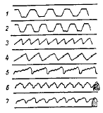
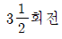
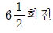
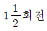

피아노조율산업기사 (2002-05-26 기출문제)
1과목: 임의 구분
1. 20번 현의 굵기는 몇 mm인가?
- 1.100mm
- 1.125mm
- 1.150mm
- 1.175mm
(정답률: 알수없음)

2. 소프트 페달에 관한 설명이다. 옳지 않은 것은?
- 그랜드는 이 페달을 밟으면 건반과 액션 전체가 오른편으로 이동하여 타현 갯수가 달라진다.
- 그랜드는 이 페달을 밟으면 음색의 변화를 일으킨다.
- 업라이트는 타현 위치가 변경되지 않고 타현 거리가 가까워지므로 음량보다 음색을 줄이는 효과가 있다.
- 그랜드와 업라이트의 소프트 페달은 음색과 음량이 차이가 있다.
(정답률: 알수없음)
3. 프레임(철골)이 갖추어야 할 필요조건이라고 볼 수 없는 것은?
- 강도가 높을 것
- 기계가공성이 좋을 것
- 기포가 없고 균질일 것
- 음의 지속, 확대, 합성의 기능을 가질 것
(정답률: 알수없음)
4. 음향판의 제작조건 중 틀린 것은?
- 음의 전달이 빠를 것
- 비중이 클 것
- 음질이 좋을 것
- 탄성이 있을 것
(정답률: 알수없음)
5. 튜닝핀의 제원에 대한 설명 중 틀린 것은?
- 직경 6.75-7.25 mm
- 무게 25-30g
- 길이 60-64 mm
- 박히는 부분에는 30-35mm의 나사산을 가공
(정답률: 알수없음)
6. 핀판(pin block)에 대한 설명 중 맞는 것은?
- 핀판의 재료는 고로쇠, 스프르스, 라왕 등이며 여러겹으로 겹쳐서 만든다.
- 핀판의 폭은 약 18㎝ 내외 두께는 6㎝ 정도이다.
- 튜닝핀의 구멍은 튜닝핀보다 0.6-0.8mm 쯤 굵은 드릴로 뚫는다.
- 핀판이란 후레임과 튜닝핀 사이의 원형으로 박힌 나무를 말한다.
(정답률: 알수없음)
7. 액션 각 부분에 사용되는 목재의 함수율은?
- 80-90%
- 50-60%
- 20-30%
- 3-14%
(정답률: 알수없음)
8. 액션 해머 받드에 사용하는 가죽의 구비조건 중 틀린 것은?
- 유연(柔軟)할 것
- 탄력(彈力)이 없을 것
- 압축(壓縮)에 견딜 것
- 강성(剛性)이 있을 것
(정답률: 알수없음)
9. 건반의 폭은 88건의 경우 기준이 얼마인가?
- 1240 - 1250mm
- 1230 - 1240mm
- 1200 - 1210mm
- 1220 - 1230mm
(정답률: 알수없음)
10. 액션 부속에서 급속 반복 타현을 가능하게 하는 것은?
- 레규레이팅 버턴
- 레피티션 레버
- 생크로라
- 소스테누토 페달
(정답률: 알수없음)
11. 다음 그림의 곡선들은 마찰된 현, 튕겨진 현, 때려진 현의 한점의 진동을 나타낸 것이다. 그림 중 튕겨진 현의 곡선에 가장 가까운 것은 어떤 것인가?

- 1, 2
- 3, 4
- 5, 6
- 7
(정답률: 알수없음)
12. 음의 성질(3요소)이 아닌 것은?
- 하모니
- 높낮이
- 음빛깔
- 셈여림
(정답률: 알수없음)
13. 어떤 소리가 또 다른 소리를 들을 수 있는 능력을 감소시키는 현상은?
- 주관음
- 양이 효과
- 음강도레벨
- 매스킹 효과
(정답률: 알수없음)
14. 높은 주파수보다 낮은 주파수 일수록 어떠한 성질이 강한가?
- 반사와 흡수
- 반사와 회절
- 흡수와 회절
- 흡수와 소음
(정답률: 알수없음)
15. A73음 1760Hz의 파장은? (단, 음속 340 m/s)
- 19.3 cm
- 5.18 cm
- 51.8 cm
- 598.4 cm
(정답률: 알수없음)
16. 주파수에 관한 설명 중 옳은 것은?
- 주파수는 현의 밀도의 제곱근에 비례한다.
- 주파수는 현의 지름에 비례한다.
- 주파수는 현의 길이에 비례한다
- 주파수는 현의 장력의 제곱근에 비례한다.
(정답률: 알수없음)
17. 음색 비부라토(vibrato)는 무엇을 이용하는가?
- 음고
- 음량
- 맥놀이
- 배음
(정답률: 알수없음)
18. 음의 특성 중 진동수의 많고 적음으로 결정되는 것은?
- 음의 셈여림
- 음의 높낮이
- 음색
- 음의 길이
(정답률: 알수없음)
19. 인간의 귀에 들리는 최소 음의 크기를 0dB(decibel)로 했을 때 귀에 고통을 주는 음의 크기는?
- 약 30dB
- 약 50dB
- 약 60dB
- 약 130dB
(정답률: 알수없음)
20. 니들링을 할 때 가능하면 작업하지 말아야 할 부분은?
- 해머 타현점 부분
- 해머 어깨 부분
- 해머 중간 부분
- 해머 하단 부분
(정답률: 알수없음)
2과목: 임의 구분
21. 음에 대한 설명 중 옳지 않은 것은?
- 소리가 어느 매질의 경계면에 입사하게 되면 일부 반사, 흡수, 투과하는 성질이 있다.
- 파장이 길수록 회절하기 쉽다.
- 낮은 주파수는 고주파음에 비하여 회절하기 쉽다.
- 일반적으로 물체가 클수록 회절하기 쉽다.
(정답률: 알수없음)
22. 소리의 세기 단위는?
- watt/m2
- erg/m2
- W2/cm
- dB
(정답률: 알수없음)
23. 다음의 경우 음의 전달속도가 가장 늦은 것은?
- 공기 14℃(비중 0.000126)
- 물 13℃(비중 1.4)
- 유리(비중 2.4)
- 콘크리트(비중 약 2.6)
(정답률: 알수없음)
24. 소리의 일반적인 성질 중 반사(반향)에 관한 설명으로 틀린 것은?
- 소리의 반사 각도는 입사 각도와 같다.
- 입사 방향과 반사 방향은 동일면 상에 있다.
- 어떤 물체에 소리가 25° 각으로 부딪히면 단순반향이 발생한다.
- 여운이란 방안에서 소리가 계속 반향되는 현상이다.
(정답률: 알수없음)
25. 조음(Unpitched sound)의 용어를 표현한 것이다. 이 중 틀린 것은?
- 진동이 불규칙하며 일정한 높이가 없는 소리
- 시끄러운 소리
- 깨지는 소리
- 비주기성(非週期性)인 음으로서 음색을 판별할 수 없는 음
(정답률: 알수없음)
26. 소리가 들린다는 것은 청각신경을 통해 뇌로 전파되는 것 인데 어떤 형태로 뇌에 전파되는가?
- 전기적펄스
- 소리
- 근육진동
- 골격진동
(정답률: 알수없음)
27. 2m의 강선이 C음을 낸다면 40cm의 강선이 내는 음은 어떤 음인가? (단, 장력과 굵기가 같은 것)
- 1옥타브위의 G음
- 2옥타브위의 E음
- 2옥타브위의 A음
- 3옥타브위의 A음
(정답률: 알수없음)
28. 음압(音壓)레벨의 단위는?
- Cycle/dB
- Hz/sec2
- dB
- dB/sec2
(정답률: 알수없음)
29. 유스타키오관(Eustachian tube)의 역할은?
- 고막진동의 진폭을 감소시킨다.
- 중이의 공기압과 외부의 기압을 같게 조정한다.
- 고막의 진동력을 15배정도 확대시켜 타원창에 전달한다.
- 고막의 진동력을 15배정도 확대시켜 기저막에 전달한다.
(정답률: 알수없음)
30. 복합음(complex sound)이란?
- 주파수가 서로 다른 많은 순음이 합하여진 소리
- 한개의 기본음과 그 정수배의 주파수를 갖는 배음에 서 만들어지는 악음
- 주파수가 같은 2개의 순음이 합하여진 소리
- 주파수가 다른 2개의 악음이 합하여진 소리
(정답률: 알수없음)
31. 다음은 필하모닉 핏치(Philharmonic pitch)에 대한 것이다. 필하모닉 수치 중 맞는 것은?
- A = 435
- A = 438
- A = 440
- A = 442
(정답률: 알수없음)
32. 평균율에 있어서 기음으로 부터 위로 완전4도 아래로 완전5도의 음정을 잡았을 때 비트(Beats)수는?
- 4도의 비트가 5도의 1/2이다.
- 5도의 비트가 4도의 1/2이다.
- 4도가 9비트 많다.
- 비트수는 1:1로 동일하다.
(정답률: 알수없음)
33. 200Hz의 부분음이 옳은 것은?
- 200, 300, 400, 500
- 200, 250, 300, 350
- 200, 400, 600, 800
- 250, 500, 750, 1000
(정답률: 알수없음)
34. 다음 보기는 두음간의 매초당 맥놀이를 계산한 것이다. 계산법이 맞는 것은? (보기: D#31:155.56Hz, G#36: 207.65Hz)
- 207.65× 3 = 622.95, 155.56× 4 = 622.24, 622.95-622.24 = 0.71
- 155.56× 3 = 446.68, 207.65× 4 = 830.60, 830.60-446.68 = 383.92
- 155.56× 5 = 777.80, 207.65× 4 = 830.60, 830.60-777.80 = 52.80
- 155.56× 3 = 446.68, 207.65× 2 = 415.30, 446.68-415.30 = 31.38
(정답률: 알수없음)
35. 5도 음정 검사에서 단3도 장3도 검사란?
- 저음쪽을 단3도 고음쪽을 장3도로 잡고 장3도보다 단3도의 맥놀이가 약간 빠르면 된다.
- 저음쪽을 장3도 고음쪽을 단3도로 잡고 단3도보다 장3도의 맥놀이가 약간 빠르면 된다.
- 저음쪽을 단3도 고음쪽을 장3도로 잡고 장3도보다 단3도의 맥놀이가 2배이면 된다.
- 저음쪽을 장3도 고음쪽을 단3도로 잡고 단3도보다 장3도의 맥놀이가 2배이면 된다.
(정답률: 알수없음)
36. 콘써트 조율시 주의사항 중 맞지 않는 것은?
- 피치를 변경할 때는 2일전에 조율을 행하여야 한다.
- 테스트 블로우는 평소보다 강한편으로 하는것이 좋다.
- 당일의 조율은 평소보다 정성들여 행하여야 한다.
- 피치를 변경할 때는 연주직전에 행하여야 한다.
(정답률: 알수없음)
37. 평균율 4도, 5도는 순정율 4도, 5도에 비해 어느 정도의 오차가 있는가?
- 4도는 2센트 넓고, 5도는 2센트 좁다.
- 4도는 2센트 좁고, 5도는 2센트 넓다.
- 4도는 4센트 넓고, 5도는 5센트 좁다.
- 4도는 5센트 넓고, 5도는 4센트 좁다.
(정답률: 알수없음)
38. 1센트는 반음의 몇분의 몇인가?
- 5/100
- 10/100
- 2/100
- 1/100
(정답률: 알수없음)
39. 조율자세와 튜닝해머 각도에 대한 설명 중 틀린 것은?
- 튜닝해머는 가능한한 수직상태에 꽂고 조율한다.
- 팔꿈치는 가능한한 고정시킨 상태에서 조작한다.
- 튜닝해머는 항상 힘껏 돌려야 한다.
- 작은 피아노(높이:1m내외)는 앉아서 조율하는 것이 편리하다.
(정답률: 알수없음)
40. 피아노에 평균율음계 또는 평균율을 적용하는 이유라고 볼 수 없는 것은? (단, 전자적인 방법을 사용한 것은 제외)
- 순정조(純正調)를 그대로 건반악기에 적용하면 편리하기 때문이다.
- 건반악기에 평균율을 적용하면 편리하다.
- 피아노는 자유음을 발생시키지 못하기 때문이다.
- 8도 음정 중 53개의 소리를 내기 어렵기 때문이다.
(정답률: 알수없음)
3과목: 임의 구분
41. A49를 10센트 높이면 몇 Hz가 되는가? (단, A49 : 440Hz,  : 1.⑤94631)
: 1.⑤94631)
- 441.616
- 442.616
- 444.616
- 445.616
(정답률: 알수없음)
42. 조율시 조율해머의 각도는 어떤 방향이 가장 이상적 인가?
- 저음부,중음부,고음부 다 같이 좌측
- 모두 일률적으로 우측 중간
- 저음부,중음부는 우측 중간, 최고음부는 수직
- 저음부는 우로 수직에서 20° - 25° ,중음부는 수직이거나 약간 우측, 최고음부는 좌측으로 기우는 것
(정답률: 알수없음)
43. 디디머스 콤마(Didymus comma)란?
- 단3도와 피타고라스 장3도의 차이다.
- 8도 순환에 의해 만들어진 음계의 오차를 말한다.
- 대전음과 소전음의 차를 말한다.
- 디디머스에 의해 제창된 평균률의 이론이다.
(정답률: 알수없음)
44. 근음을 C로 할 때 16배음열에서 제8배음은?
- E
- D
- C
- F
(정답률: 알수없음)
45. 평균율에서 한옥타브는 총 몇 센트(CENT)인가?
- 1000센트
- 1200센트
- 1400센트
- 1600센트
(정답률: 알수없음)
46. 건반 동작검사 작업 중 틀린 것은?
- 건반 앞을 10mm 정도 들었을 때 자체 중량으로 부드럽게 내려가야 한다.
- 바란스홀이 좁을 때는 윗쪽이 굵고 아래쪽이 가늘게 되어 있는 전용 공구로 아래에서 위로 통과시켜 넓혀준다.
- 바란스홀이 조금 넓어져 있을 때에는 물 한방울을 떨어뜨려 좁혀준다.
- 건반 동작이 느릴 때에는 키플라이어로 가볍게 집어준다.
(정답률: 알수없음)
47. 그랜드 피아노 캡스턴 조정에 대한 설명 중 맞는 것은?
- 타현 거리에 관계없이 해머레일 크로스에서 3mm 뜨게 조정한다.
- 헤머레일 크로스에 얹히게 조정한다.
- 건반이 약간의 로스트 모숀이 있게 조정한다.
- 타현거리에 맞게 조정하고 해머레스트 레일에서 약간 뜨게 조정한다.
(정답률: 알수없음)
48. 애프터 터치에 관한 설명 중 맞는 것은?
- 해머접근이나 해머드롭을 통틀어서 애프터 터치라고한다.
- 강한 타현 후 건반에 되돌아오는 손의 감각을 애프터 터치라고 한다.
- 건반을 눌렀을 때 전체적인 감각을 통틀어 애프터 터치라고 한다.
- 해머가 렛오프된 상태에서 조금 더 내려가는 상태를 애프터 터치라고 한다.
(정답률: 알수없음)
49. 그랜드 피아노의 해머접근에 관한 설명 중 옳은 것은?
- 해머접근은 저음, 중음, 고음 전부 같은 거리로 조정해야 한다.
- 가급적 피아노 액션이 부착된 상태에서 조정하는 것이 좋다.
- 해머접근은 레피티숀레버 스크류를 돌려서 조정한다.
- 해머접근은 해머드롭을 조정한 다음에 실시해야 한다.
(정답률: 알수없음)
50. 잭 레일의 거리 조정 방법은?
- 건반을 누르고 잭과 레일 간격은 4.5-5mm를 두고 조정한다.
- 건반을 누르고 잭과 레일 간격은 1.5-2mm를 두고 조정한다.
- 건반을 누르고 잭과 레일 간격은 2.5-3mm를 두고 조정한다.
- 건반을 누르고 잭과 레일 간격은 3-4mm를 두고 조정한다.
(정답률: 알수없음)
51. 소스테누토 페달에 관한 설명 중 틀린 것은?
- 필요한 음만 지속시키고 다른 음은 스타캇토로 연주 할 수 있는 페달이다.
- 전체음을 울려놓고 협화하는 음만 페달을 사용하여 연주할 수 있는 페달이다.
- 댐퍼페달을 밟고 소스테누토 페달을 밟은 다음 댐퍼 페달을 놓아도 댐퍼가 그대로 있어야 한다.
- 소스테누토 페달을 밟았을 때 로드날에 탭이 걸리지 않게 조정한다.
(정답률: 알수없음)
52. 낡은 해머헤드를 전체 갈아 넣을 때 옳은 방법은?
- 먼저 낡은 해머를 차례로 모두 생크로 부터 빼고 접착제를 생크끝에 칠하고 새로운 해머를 붙인다.
- 먼저 낡은 해머를 차례로 모두 생크로 부터 빼고 접착제를 생크끝과 해머의 구멍에 칠하고 새로운 해머를 붙인다.
- 낡은 해머를 빼버리고 저음이나 고음쪽에서 차례로 붙여간다.
- 짝수나 홀수 번호를 남겨두고 빼낸 다음 남겨둔 해머에 맞추어 차례로 교체한다.
(정답률: 알수없음)
53. 그랜드 피아노의 로라스킨을 교환할 때 좋은 방법은?
- 스킨 두께에 관계없이 접착제를 전면 칠해서 붙인다.
- 스킨 두께가 같은 것으로 접착제를 전면 칠해서 붙인다.
- 스킨 두께가 같은 것으로 느슨하게 붙인다.
- 스킨 두께가 같은 것으로 양단만 접착제를 칠해 팽팽하게 붙인다.
(정답률: 알수없음)
54. 해머 헤드가 너무 강해 음이 강한 소리가 날 때에 수리하는 방법 중 가장 옳은 것은?
- 피커로 해머의 아래부분과 윗부분을 적당히 니들링해 준다.
- 굵은 피커로 정가운데를 침질하여 없애준다.
- 해머 헤드에 경화제를 발라서 강한 소리를 둔하게 해준다.
- 해머 아이롱으로 다려서 강한 음을 부드럽게 해준다.
(정답률: 알수없음)
55. 부러진 건반을 접착할 때 가장 적당한 방법은?
- 부러진 건반을 옆 건반과 같이 움직이게 한다.
- 건반에 스카치 테이프로 감아준다.
- 접착제를 바르고 건반납을 빼낸다.
- 양 옆면에 얇은 나무판을 붙여 접착한다.
(정답률: 알수없음)
56. 그랜드 피아노의 키를 타현하고 소스테누토 페달을 밟았으나 댐퍼가 떨어져 버리고 음이 울리지 않는다. 이것의 수리방법은?
- 페달봉 머리의 나사를 돌려서 올려준다.
- 페달레버와 소스테누토 로드 사이에 있는 리프팅로드의 길이를 짧게 잘라준다.
- 소스테누토 로드의 위치를 확인하고 바로 잡는다.
- 열쇠대를 풀고 액션의 위치가 제자리에 있는가를 확인한다.
(정답률: 알수없음)
57. 조율을 하다가 점핑핀(jumping pin)이 나왔을 때 그 수리 방법은?
- 핀을 빼고 핀구멍에 윤활유를 주입한다.
- 핀을 망치로 조금 때려 박는다.
- 핀구멍에 나무조각을 넣은 후 핀을 박는다.
- 조율핀 나사산에 백묵을 칠한 후 다시 박는다.
(정답률: 알수없음)
58. 치핑(Chipping)이란?
- 현 전체를 교환하는 것을 말한다.
- 후레임을 내리고 대수리를 하는 것이다.
- 현 전체를 교환 했을 때 액션없이 현을 튕겨서 대강 조율하는 것이다.
- 후레임을 내리고 브리지가 가라 앉은 것을 감안하여 후레임 위치를 조정하는 것이다.
(정답률: 알수없음)
59. 향판이 갈라졌을 때의 수리법은?
- 갈라진 틈에 아교나 본드를 밀어 넣는다.
- 아교를 개어 밀어 넣는다.
- 향판과 동일한 나무를 깍아 접착제를 발라 끼워 넣는다.
- 금속편을 걸쳐 나사로 박는다.
(정답률: 알수없음)
60. 현을 교환하려면 좌로 몇 회전해서 탈현 하는가?

- 6회전


(정답률: 알수없음)